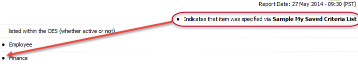
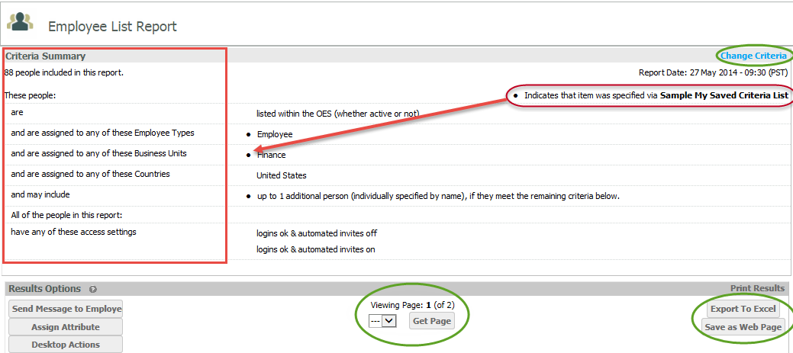
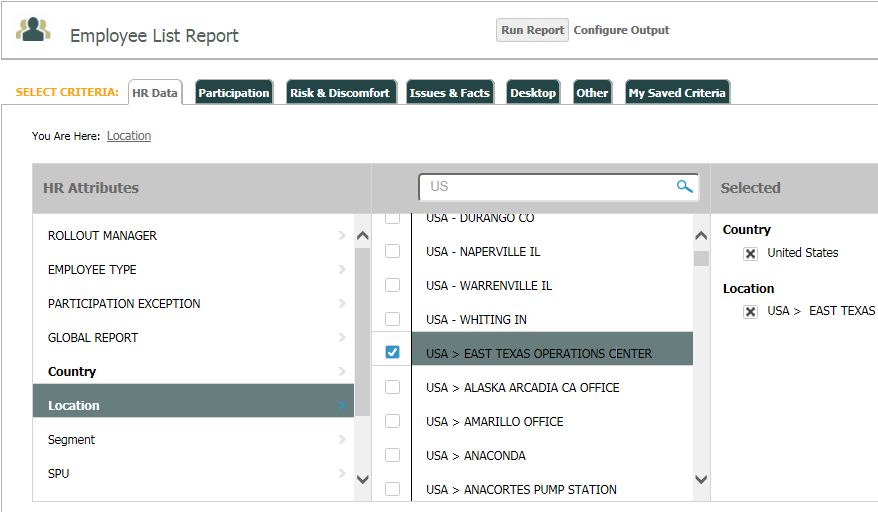
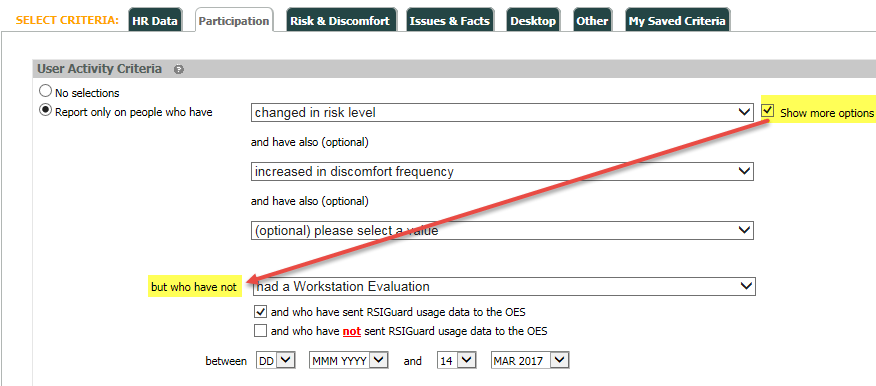
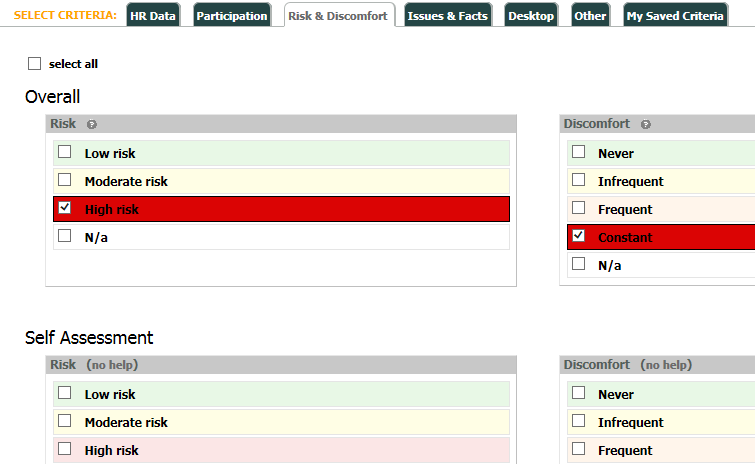
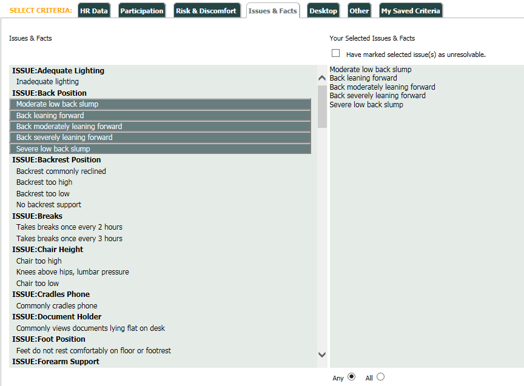
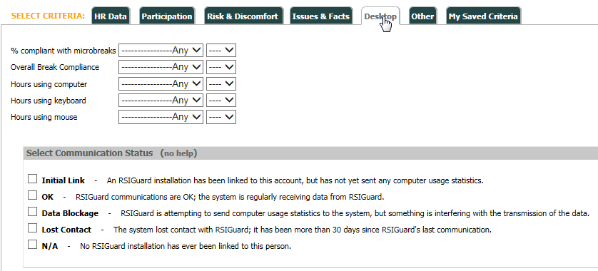
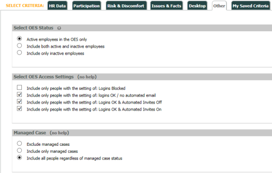

To see all values that contain a certain set of letters or phrase, such as "uni", enter "%uni%" into the search box. The results will contain all values that contain "uni".

Report criteria can be selected manually when you run a report, or you can used pre-saved report criteria to save time when you run the same report frequently.
Using Saved Report Criteria
If you want to use previously configured saved criteria, select the My Saved Criteria tab in the report setup, then select the saved criteria set that you want to use.
After selecting a saved criteria, you may add additional filters using the other tabs if you wish.
Note: The criteria included in your selected saved criteria will be indicated in the report once it is run (see screenshot below). If you want to see what is included in your selected saved criteria, run the report first and view the Criteria Summary. Then click Change Criteria and add any additional filters you want.

See My Saved Criteria for more info on using saved criteria.
Select Report Criteria Manually
Select the tabs in which to configure different types of filter criteria.
When you have selected all your criteria and configured the output, click Run Report.
Note the users included in the report will need to meet ALL of the criteria selected. Any criteria selected will be applied to all reports unless you select the Reset Criteria button.
A Criteria Summary is displayed at the top of the report so you can clearly see the criteria used for the report. Criteria used from a saved criteria set is indicated by a bullet.

If you want to modify the criteria and re-run the report, click Change Criteria.
If the report exceeds the page limit of 100 entries, a page selector will be shown.
Report criteria available for selection include:
HR Data: Filter on user HR attributes.
Participation: Filter for user activity criteria
Risk & Discomfort: Filter for user's risk and discomfort levels
Issues & Facts: Filter on issues and facts for users
Desktop: Filter for RSIGuard data (if installed)
Other: Filter by employment status or by OES Access Settings
HR Data
HR Data includes any of the attributes from the Attribute Types included in the user profiles.
Select an Attribute Type, then select from the available attributes to add them to the Selected column as a report filter. For example, if you select the Attribute Type "Department," you can then select attributes "Sales" and "Marketing" to filter for users in the Sales and Marketing departments, thereby excluding users in other departments from the report.
Note that the report will only include individuals who meet ALL of the criteria listed. (Criteria for different Attribute Types are joined by AND only.)

Tip: When you create a saved criteria set in My Saved Criteria using HR Data, you can also re-phrase a statement using HR Data as a negative. For example, you can include a second Country Attribute Type and rephrase the Country selection as a negative, so that the filter includes "all users who are assigned to Sales and Marketing AND are not assigned to Canada". The "re-phrase" option is only available through My Saved Criteria.
If there are a more than 300 attributes for an Attribute Type, use the search field to find specific attributes. Click the search icon to display a text box for searching.
To see all values that contain a certain set of letters or phrase, such as "uni", enter "%uni%" into the search box. The results will contain all values that contain "uni".
Participation
The User Activity Criteria available for filtering includes filtering for people who meet the specified Participation criteria. The default option is "No selections."
You can include up to three Participation criteria in your filter, for example "all people who have changed in risk level and have also increased in discomfort frequency".
Click Show more options to include a "have not" criteria. For example, "but who have not had a Workstation Evaluation"
Alternately, you can choose to filter only for "all people who have not" met the selected criteria. Only one "have not" criteria may be selected.
If RSIGuard is installed you can add a filter for users with or without usage data, by checking one of the options at the bottom:
and who have sent RSIGuard usage data to the OES
and who have not sent RSIGuard usage data to the OES

The date range applies to all selected criteria, meaning all criteria actions must have occurred during that time period.
See Appendix A for more information regarding the log points available for reporting.
Risk & Discomfort
You can filter by various Risk and Discomfort levels. The Discomfort levels are those reported by the user in a self-assessment, or subsequently modified by the user via their dashboard. By default users with any Risk and Discomfort level are included. So if you do not want to filter by these criteria, leave selections unchecked. Use the "select all" box to select or de-select all options.
If you check one or more selections in any group, the unchecked criteria will be filtered out.
Overall Risk displays the greatest of any risk source.
Overall Discomfort displays the greatest of any discomfort source. Typically, however, it is the same as the self-assessment discomfort.
Desktop Risk is calculated by RSIGuard activity.

Issues & Facts
To include Issues & Facts for users in the report, select the item(s) you want to add to the Your Selected Issues & Facts column.
The report will include all users who meet your other selected criteria and who also have the selected issue(s) and fact(s) listed in their Issues & Facts. The report can be run for users experiencing "any" of the issues or "all" of the issues selected by selecting the Any or All button at the bottom.
To filter only for unresolvable issues, check the box "Have marked selected issue(s) as unresolvable".

Desktop
If RSIGuard is installed, you can select the following desktop data to filter on:
% compliant with microbreaks: greater or less than a specified percentage
Overall Break compliance: greater or less than a specified percentage
Hours using computer: is greater than or is less than x hours per day
Hours using keyboard: is greater than or is less than x hours per day
Hours using mouse: is greater than or is less than x hours per day
Select Communication Status: The options in this section can be used to diagnose problem accounts, when data are not being received from RSIGuard, or to identify people who are or are not using RSIGuard.

Other
You can filter by employment status or by OES Access Settings in this tab.
Select OES Status: Include active employees only (default), inactive employees only, or both active and inactive employees.
Select OES Access Status: Filter for people with specific access settings (no defaults).
Managed Case (if enabled): Include or exclude managed cases, or include all people regardless of managed case status (default).
